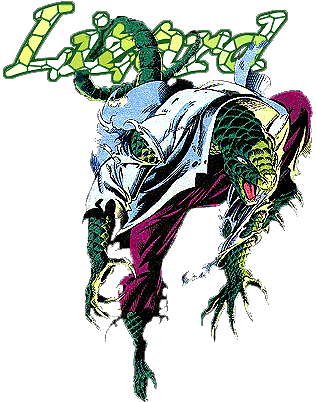
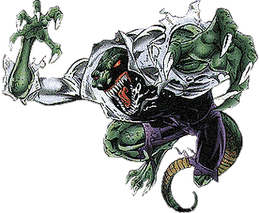
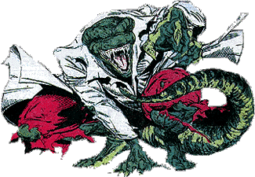
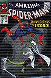

|
Name: Dr. Curtis Connors 1st App.: Amazing Spider-Man #6 ID: Secret Relatives: Husband to Martha, Father to William. Affiliates: Former allies of The Iguana, Calypso, and even Spider-Man himself.. |
Enemies:
Spider-Man, Human Torch,
The Owl, Morbius, Stegron, Prime, Spider-Prime, Silvermane,
Yith Origin: Originally an amputee army surgeon, Dr. Connors studied reptiles & their ability to regenerate limbs. Doing so, he discovered a chemical substance & gave it to himself transforming himself into a reptilian-humanoid form. |
|
1st App.: Amazing Spider-Man #6 Origin Issues: Amazing Spider-Man #6 & Chapter One #0 Spider-Man Appearances: Amazing Spider-Man #6, 43-55, 75-77, 101, 102, 165, 166, 313, 365 & Giant-Size #5...Spectacular Spider-Man #32-34, 36, 39, 40, 127, 237-239 & Super Special 1...Web Of Spider-Man #109-111 & Super Special 1...Spider-Man #1-5 & Super Special 1, Unlimited #19... Venom Super Special 1...Prime Infinity...Prime V2 #1 & 2...Chapter One #0, 5 & 6...Lifeline #2 & 3...Quality Of Life #1-3...Spider-Man: Blue #3 Other Appearances: Secret Wars #1-12...DC Versus Marvel #2 (Cameo) |
 |
|  |  Spider-Man Fear Rating: 8 (out of 10) |